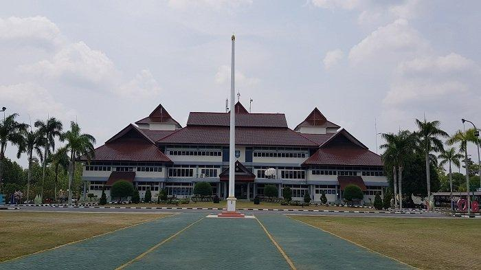
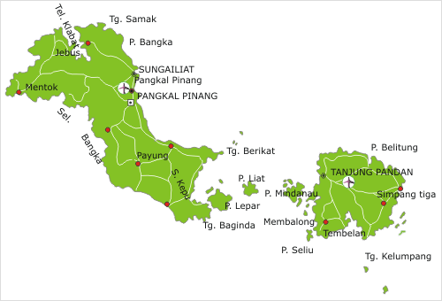
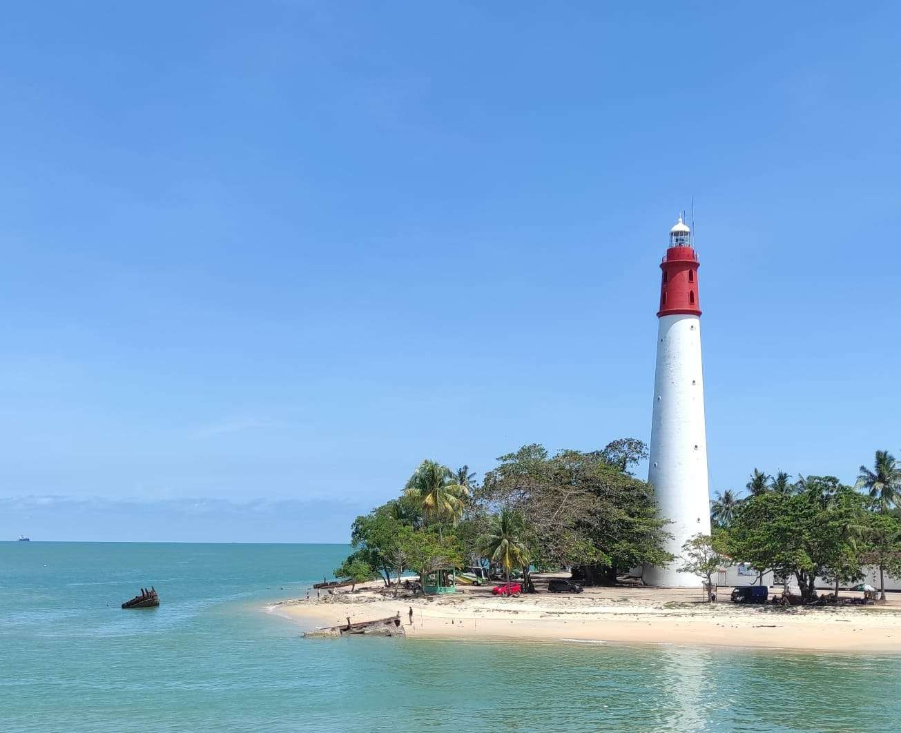

Sejarah

Bangka Belitung memiliki sejarah yang panjang, dimulai dari
kerajaan-kerajaan lokal dan keterlibatan dalam perdagangan maritim.
Pada abad ke-18, wilayah ini dikuasai oleh Kesultanan Palembang
sebelum Belanda mengambil alih untuk menguasai tambang timah yang
kaya di Bangka.
Setelah Indonesia merdeka, Bangka Belitung bergabung dengan Sumatera
Selatan, tetapi pada tahun 2000, wilayah ini resmi menjadi provinsi
sendiri.
Geografis

Bangka Belitung, di timur Sumatera, terdiri dari Pulau Bangka dan
Belitung serta pulau kecil lainnya. Dikelilingi Laut Cina Selatan
dan Selat Karimata, wilayahnya dikenal dengan pantai pasir putih,
batu granit, tambang timah, serta iklim tropis.
Wisata
Bangka Belitung terkenal dengan wisata alamnya, terutama pantai
berpasir putih dan batu granit besar seperti di Pantai Tanjung
Tinggi dan Pantai Parai Tenggiri.
Museum Timah Indonesia

Museum Timah Indonesia di Pangkalpinang adalah museum khusus yang
menampilkan sejarah dan perkembangan industri timah di Bangka
Belitung.
Mercusuar Bangka Belitung

Mercusuar di Bangka Belitung yang paling terkenal adalah Mercusuar
Pulau Lengkuas, terletak di lepas pantai Belitung. Dibangun pada
tahun 1882 oleh pemerintah kolonial Belanda.